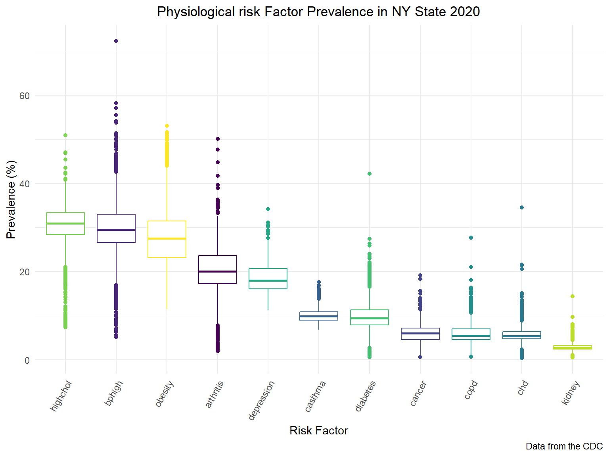
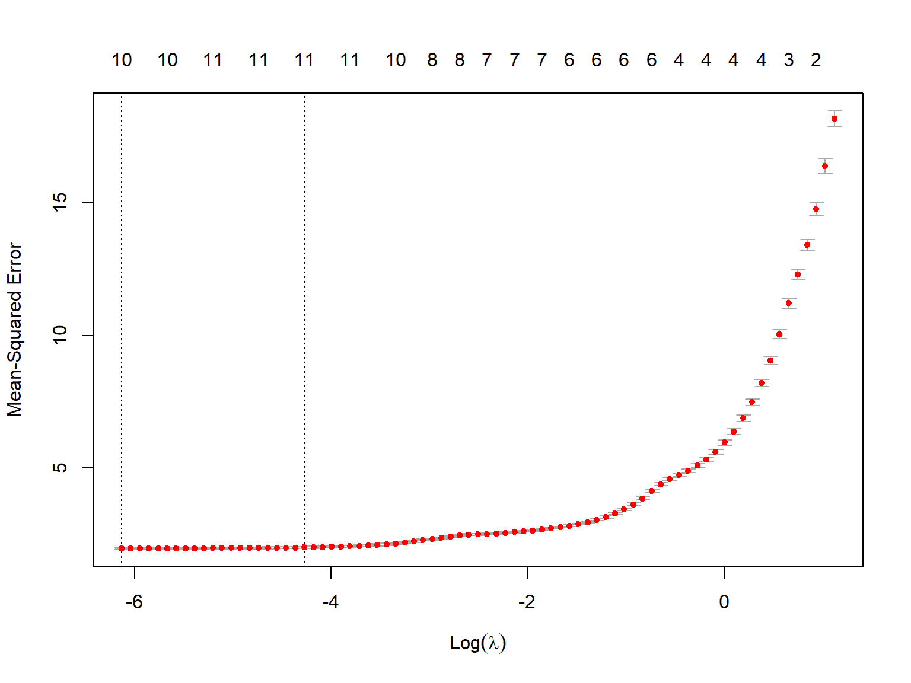
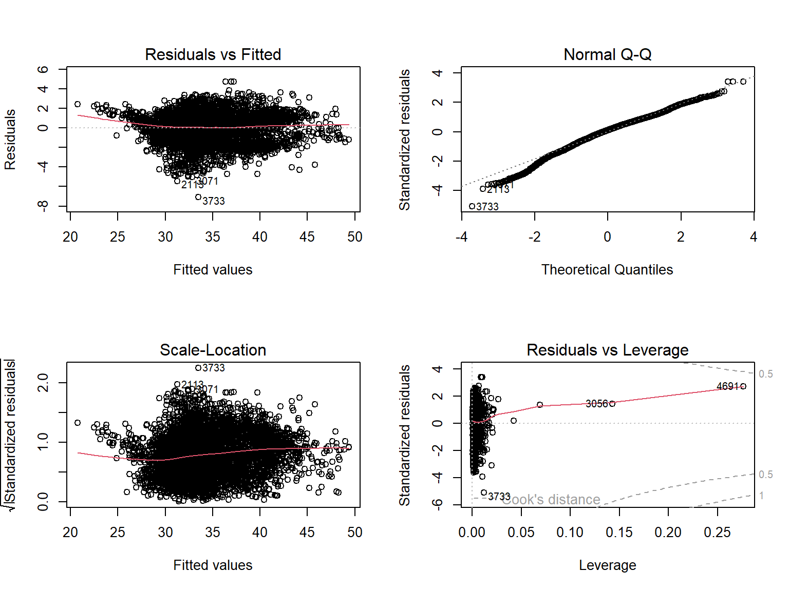
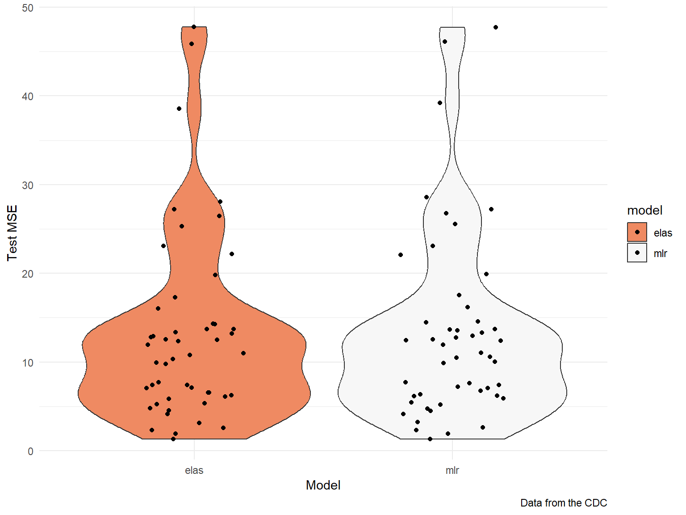

ARTHRITIS: Arthritis among adults aged >=18
Years
BPHIGH: High blood pressure among adults aged >=18
Years
CANCER: Cancer (excluding skin cancer) among adults aged
>=18 Years
CASTHMA: Asthma among adults aged >=18 Years
CHD: Coronary heart disease among adults aged >=18
Years
COPD: Chronic obstructive pulmonary diseases among adults
aged >=18 Years
DEPRESSION: Depression among adults aged >=18
Years
DIABETES: Diagnosed diabetes among adults aged >=18
Years
HIGHCHOL: High cholesterol among adults aged >=18 Years
who have been screened in the past 5 Years
KIDNEY: Chronic kidney disease among adults aged >=18
Years
OBESITY: Obesity among adults aged >=18 Years
SLEEP: Sleeping less than 7 hours among adults aged
>=18 Years
data_df = read_csv('PLACES__Census_Tract_Data__GIS_Friendly_Format___2022_release.csv') %>%
janitor::clean_names() %>%
select(county_name,total_population, state_abbr,
starts_with('arthritis'), starts_with('bphigh'),
starts_with('cancer'), starts_with('casthma'), starts_with('chd'),
starts_with('copd'),starts_with('depression'), starts_with('diabetes'),
starts_with('highchol'), starts_with('kidney'), starts_with('obesity'),
starts_with('sleep'))
data_df %>%
group_by(state_abbr) %>%
dplyr::summarize(
number_of_regions = n(),
population = sum(total_population)
) %>%
arrange(-population) %>%
head() %>% knitr::kable()| state_abbr | number_of_regions | population |
|---|---|---|
| CA | 8005 | 37253680 |
| TX | 5222 | 25145397 |
| NY | 4840 | 19377658 |
| FL | 4165 | 18801111 |
| IL | 3114 | 12830630 |
| PA | 3196 | 12702210 |
The dataset has 70338 observations across the country, each represents a summarized estimate of a district. We select New York state as our sample data to build the model as it has third largest population with sufficient amount of sample.
ny_data = data_df %>%
filter(state_abbr == 'NY') %>%
select(ends_with('prev')) %>%
rename_with(~str_remove(., '_crude_prev'))The following is a boxplot of the prevalences of all of the interested variables. The risk factors with highest prevalence involve screening and medication (HIGHCHOL, BPHIGH and OBESITY). The risk factors with the lowest prevlances are diseases (KIDNEY, CHD, COPD). There is also a general trend that risk factors with higher prevalences have higher variance.
ny_data %>% select(-sleep) %>%
pivot_longer(
everything(),
names_to = "risk_factor",
values_to = "prevelance"
) %>%
ggplot(aes(x = reorder(risk_factor, -prevelance), y = prevelance,
color = risk_factor)) +
geom_boxplot() +
theme(axis.text.x = element_text(angle = 60, hjust = 1),
legend.position = "none") +
labs(
title = "Physiological risk Factor Prevalence in NY State 2020",
x = "Risk Factor",
y = "Prevalence (%)",
caption = "Data from the CDC"
) +
theme(plot.title = element_text(hjust = 0.5))
par(mfrow = c(1, 1))
ny_data %>% select(-sleep) %>% cor() %>% corrplot(
method = "circle", addCoef.col = "black", tl.col="black", tl.srt=90,
insig = "blank", diag=FALSE, number.cex = .5)Since some of the variables have relatively high correlation with each other according to the correlation matrix, the process of model selection starts by using elastic net regression in order to remedy for potential multicollinearity. We find the best lambda with lowest se through cross validation, and then fit an elastic net model with coefficients shown below.
set.seed(2023)
predictors = data.matrix(ny_data %>% select(-sleep))
outcome = ny_data %>% pull(sleep)
# 5 folds cv is used
cv_object = cv.glmnet(predictors, outcome, nfolds = 5)
# Find the best lambda with lowest se
best_lambda = cv_object %>% broom::glance() %>% pull(lambda.min)
# build elastic net model
elastic_model = glmnet(predictors, outcome, lambda = best_lambda, alpha = 0.5)
model_coef = coef.glmnet(elastic_model) %>% as.matrix() %>% as.data.frame()
model_coef[model_coef == 0] = NA
plot(cv_object)
model_coef ## s0
## (Intercept) 40.24004577
## arthritis 0.42778418
## bphigh 0.44936628
## cancer -1.71375155
## casthma 0.41079938
## chd -0.34697739
## copd 0.66195820
## depression -0.52559907
## diabetes 0.35317894
## highchol -0.30756909
## kidney -2.70665630
## obesity -0.00539821A multiple linear regression is then built with all of the variables selected above. Since the variable of obesity does not show significant influence in predicting prevalance of insufficient sleep, another multiple linear regression excluding obesity is built. The anova result tells that the second MLR model excluding obesity is favored because of the principle of parsimony.
mlr_model_1 = lm(sleep ~ arthritis + bphigh + cancer + casthma + chd + copd + depression + diabetes + highchol + kidney + obesity, data = ny_data)
# Use backward elimination based on AIC to find a mlr model
mlr_model_2 = step(mlr_model_1, direction = "backward")## Start: AIC=3282.65
## sleep ~ arthritis + bphigh + cancer + casthma + chd + copd +
## depression + diabetes + highchol + kidney + obesity
##
## Df Sum of Sq RSS AIC
## - obesity 1 2.60 9492.1 3282.0
## <none> 9489.5 3282.6
## - chd 1 42.75 9532.3 3302.4
## - casthma 1 96.15 9585.7 3329.4
## - diabetes 1 173.06 9662.6 3368.1
## - arthritis 1 367.85 9857.4 3464.7
## - copd 1 438.19 9927.7 3499.1
## - kidney 1 499.94 9989.5 3529.1
## - highchol 1 880.01 10369.5 3709.9
## - bphigh 1 1229.06 10718.6 3870.1
## - cancer 1 1257.82 10747.3 3883.1
## - depression 1 1478.14 10967.7 3981.3
##
## Step: AIC=3281.97
## sleep ~ arthritis + bphigh + cancer + casthma + chd + copd +
## depression + diabetes + highchol + kidney
##
## Df Sum of Sq RSS AIC
## <none> 9492.1 3282.0
## - chd 1 40.79 9532.9 3300.7
## - casthma 1 94.44 9586.6 3327.9
## - diabetes 1 176.98 9669.1 3369.4
## - arthritis 1 430.13 9922.3 3494.5
## - copd 1 441.12 9933.2 3499.8
## - kidney 1 500.28 9992.4 3528.6
## - highchol 1 889.92 10382.0 3713.7
## - bphigh 1 1266.09 10758.2 3886.0
## - cancer 1 1444.45 10936.6 3965.6
## - depression 1 1477.66 10969.8 3980.2summary(mlr_model_2) %>% broom::tidy() %>% knitr::kable(digits = 3)| term | estimate | std.error | statistic | p.value |
|---|---|---|---|---|
| (Intercept) | 40.334 | 0.505 | 79.921 | 0 |
| arthritis | 0.421 | 0.028 | 14.793 | 0 |
| bphigh | 0.446 | 0.018 | 25.379 | 0 |
| cancer | -1.679 | 0.062 | -27.108 | 0 |
| casthma | 0.397 | 0.057 | 6.931 | 0 |
| chd | -0.372 | 0.082 | -4.556 | 0 |
| copd | 0.686 | 0.046 | 14.981 | 0 |
| depression | -0.527 | 0.019 | -27.418 | 0 |
| diabetes | 0.373 | 0.039 | 9.489 | 0 |
| highchol | -0.311 | 0.015 | -21.278 | 0 |
| kidney | -2.757 | 0.173 | -15.953 | 0 |
anova(mlr_model_2, mlr_model_1)## Analysis of Variance Table
##
## Model 1: sleep ~ arthritis + bphigh + cancer + casthma + chd + copd +
## depression + diabetes + highchol + kidney
## Model 2: sleep ~ arthritis + bphigh + cancer + casthma + chd + copd +
## depression + diabetes + highchol + kidney + obesity
## Res.Df RSS Df Sum of Sq F Pr(>F)
## 1 4829 9492.1
## 2 4828 9489.5 1 2.598 1.3218 0.2503par(mfrow = c(2, 2))
plot(mlr_model_2)
The diagnostic plots indicates that all of the assumptions of MLR
below are met.
1.Residuals are normally distributed
2.Variance of residuals is constant across the range of variables
3.Residuals are independent of one another
# Pseudo adjusted R squared of elastic model
elastic_model %>% broom::tidy() %>% select(dev.ratio) %>% unique()## # A tibble: 1 × 1
## dev.ratio
## <dbl>
## 1 0.892# Adjusted R squared of MLR model
summary(mlr_model_2) %>% broom::glance() %>% select(adj.r.squared)## # A tibble: 1 × 1
## adj.r.squared
## <dbl>
## 1 0.892The dev.ratio and adjusted r.squared of 0.892 above
shows that the elastic net regression model and MLR model give equally
good fit to the training data from NY state.

| mse_mlr | mse_elas | |
|---|---|---|
| Min. : 1.322 | Min. : 1.329 | |
| 1st Qu.: 6.215 | 1st Qu.: 6.224 | |
| Median :11.036 | Median :11.001 | |
| Mean :13.345 | Mean :13.269 | |
| 3rd Qu.:14.578 | 3rd Qu.:14.299 | |
| Max. :47.712 | Max. :47.768 |
We then use the data from rest of the country to test the performance
of the two models in predicting the prevalence of inadequate sleep in
other 50 states. The violion plot above shows that the test
mean squared error of the elastic net regression and the multiple linear
regression model. The statistics show that there is no significant
difference between these two models in terms of predictive performance.
Therefore, we conclude that both of models could be used for regression
analysis while the elastic net model is more preferred for prediction
since it has smaller test MSE (minimal difference though) and retain
more information of the potential risk factors.
On the other hand, the multiple linear regression model is favored
for its simplicity of interpretation. While all of the physiological
risk factors except for OBESITY have significant
correlation with the prevalence of insufficient adult sleep,
ARTHRITIS, BPHIGH, CASTHMA,
COPD, DIABETES shows a positive correlation
while CANCER, CHD, DEPRESSION,
HIGHCHOL, KIDNEY suggest a negative
correlation. It is worth noticing that an 1% increase in the prevalence
of most disease factors leads to a less than 1% change in the prevalence
of insufficient sleep except for CANCER and
KIDNEY, which lead to a drop of 1.7% and 2.7% in prevalence
of insufficient sleep respectively. A reasonable explanation is that the
adults suffered from cancer and kidney diseases are more likely to have
challenged body functions, which force them to spend more time on
sleep/lay in bed for recovery and thus lower the prevalence of short
sleep.